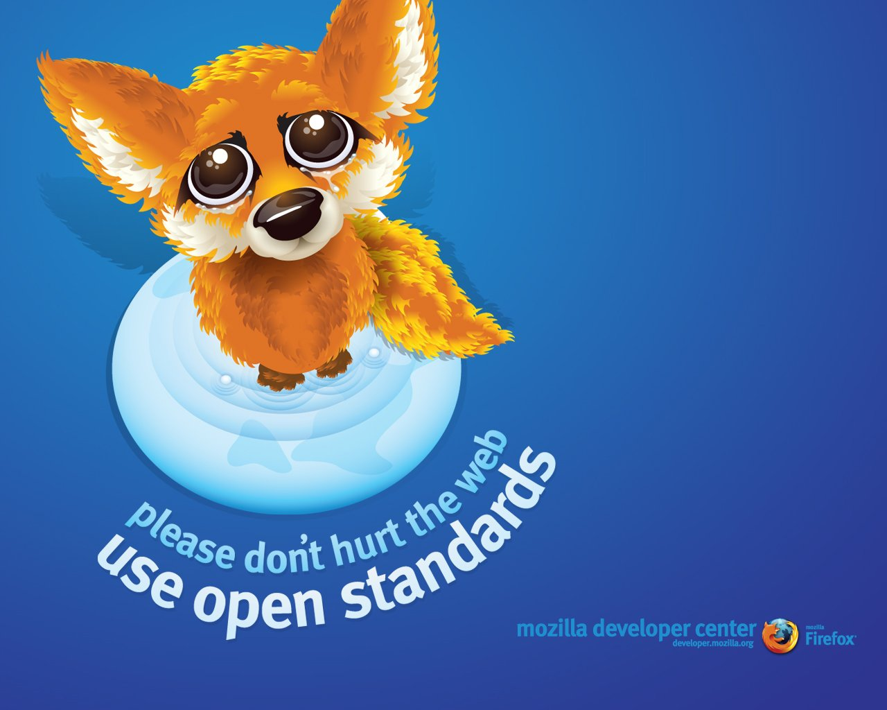
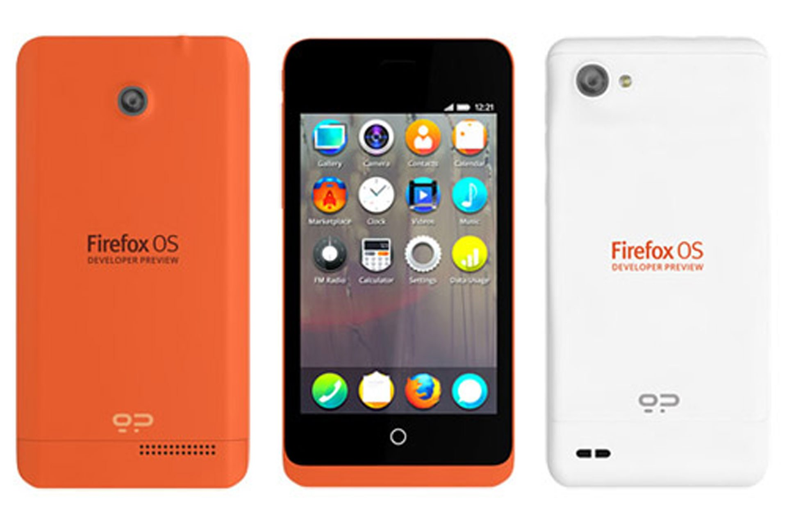

Firefox OS
Beginning of something big.
Alex Lakatos,
@lakatos88
or
alex.lakatos@mozilla.ro
Ongoing work…
A new challenge
Photo by Jason Weaver
Broken promises
Business realities
Photo by Michael Gil
Hardware lockout
Photo by Doug Geisler
Building on Open Web standards

Firefox OS is built on open standards
create them where missing
Web API work
http://arewemobileyet.com
Powered by Firefox OS

Photo by Alesa Dam
Thanks
Alex Lakatos
@lakatos88
alex.lakatos@mozilla.ro
http://alexlakatos.github.io/slides/developers-day-serbia-part1/
Photo by Yortw


 Photo by Jason Weaver
Photo by Jason Weaver

 Photo by Michael Gil
Photo by Michael Gil
 Photo by Doug Geisler
Photo by Doug Geisler